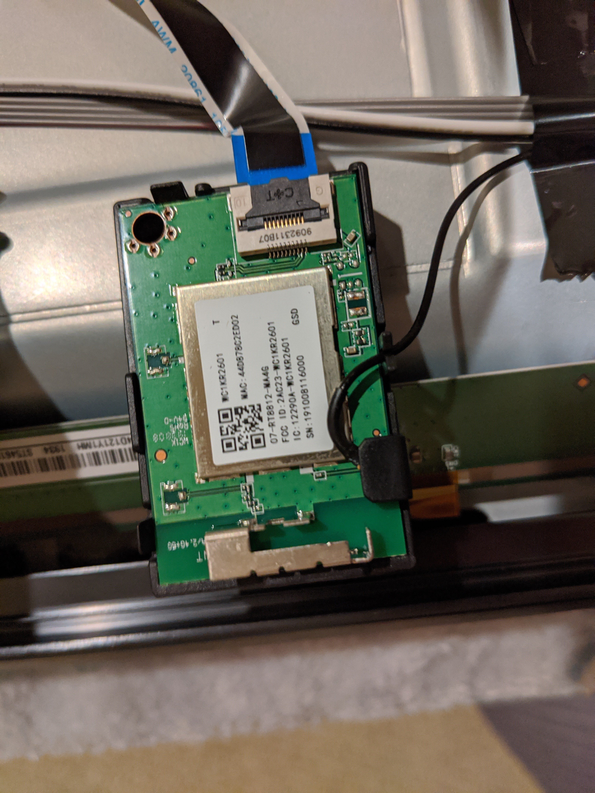
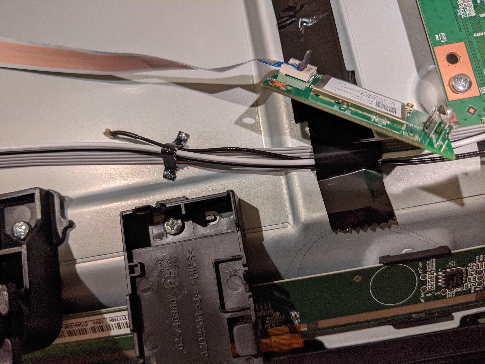
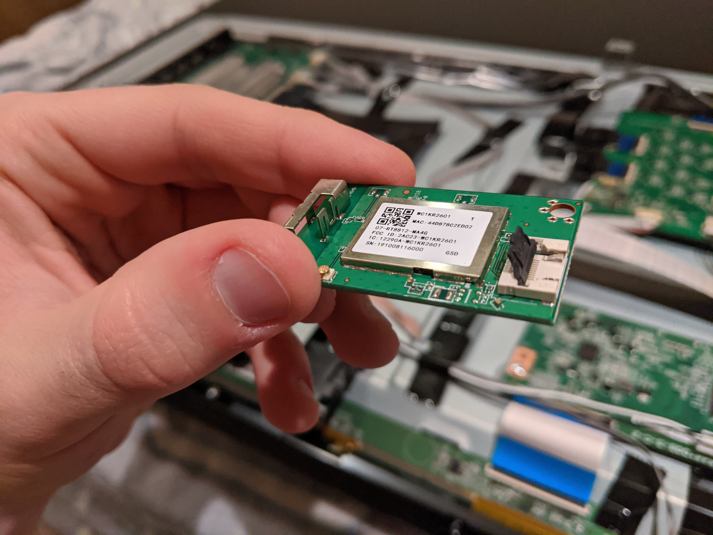
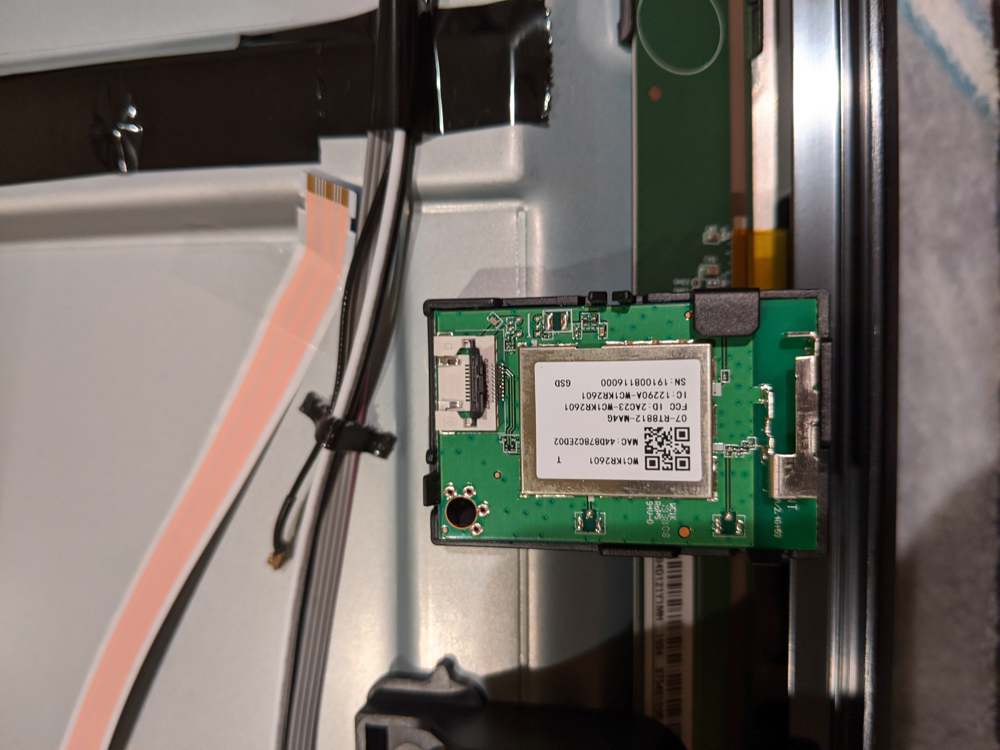

Preface & Rationale
Working in the cybersecurity industry, I have learned that there are basically two types of internet-connected consumer electronics: those that are accidentally insecure, and those that are actively malicious. As a rule, anything marketed as a “smart” version of an otherwise simple appliance is likely to be both.
Smart appliance manufacturers, unsatisfied with the profits stemming from customers’ one-time purchase of the devices themselves, have taken to packing them with ads, trackers, and shovelware in order to squeeze from their users a continuous post-purchase revenue stream. After all, why not? From an amoral business perspective, to do otherwise would simply be leaving free money on the table. Only a small minority of users have any inkling of what their smart devices are doing behind their backs, and an even smaller subset of those actually care enough to let that affect their buying decisions.
This leaves privacy- and security-conscious individuals like myself in a bind. Because we make up such a tiny segment of the market — especially compared to the kind of people who just think the word “smart” sounds cool and know nothing about the downsides — manufacturers have basically stopped producing non-smart variants of many common consumer devices entirely. If, for instance, you want to buy a good-quality 4K TV with a modern display panel at a reasonable price, you’re totally out of luck: as far as I can determine, there are literally none available.12
Being the kind of person who can’t abide by the idea of my electronics attempting to surveil, profile, and\or psychologically manipulate me, I was thus left with sorely limited options when looking, as I recently was, to purchase a 4K TV — or, more accurately, a TV-sized 2160p dumb display, which is all I really wanted. Since I didn’t want to compromise on display quality or price, I decided to take the “none of the above” hacker’s option: I picked a decently-priced smart TV with hardware that I liked (a 55” TCL R625), and then “de-smarted” it.
The astute reader might point out that certain smart TVs actually have a mode that disables smart features, chosen during setup either explicitly (as is the case with TCLs), or implicitly by declining the smart TV software’s terms of service (as on LG TVs). Alternately, a concerned user might opt to never connect the TV to any Wi-Fi network, connect it to a dummy network with no external connectivity, or block its traffic via network egress filtering.
I don’t trust any of these options, however. Even if a non-smart mode is available, who knows what it’s really doing? The software might just disable the smart TV interface and continue snooping as normal, and even if the offending functionality really is turned off, it’s only a matter of time before it is somehow “accidentally” re-enabled.3 There is even some speculation that some smart TVs, if left without a functional network connection, will attempt to connect to unsecured Wi-Fi networks (possibly in partnership with ubiquitous hotspot providers like Comcast/Xfinity) in order to exfiltrate data. From a technical standpoint, these kinds of malicious un-features would be trivial to implement, and I’d be surprised if they were not present in at least some models of smart TV.
Unfortunately, there do not currently exist any LineageOS-like projects that one could use to easily replace the software running on smart TVs, which would remove the malicious element.4 There is another option, however; one that may well be familiar to anyone who has had to deal with wireless-enabled devices running untrusted code in an otherwise secure environment. One can simply render the TV unable to connect to any network of its own accord — by physically removing its wireless hardware!
As it turns out, this is not by any means a difficult task. Even non-technical smart TV owners can do it themselves; all that is needed is a screwdriver and a bit of caution and patience. What follows is a guide for “lobotomizing” a smart TV — in this particular case a 55” TCL R625, but smart TV internals are all similar enough that these steps should apply broadly to other brands and models as well.
The Operation
Tools
- A standard-sized Phillips head screwdriver
- A spudger or other thin, flat piece of rigid plastic
- A small amount of electrical tape
Steps
-
If your TV is brand new, plug it in, turn it on, and double-check that the display is working correctly.
-
Make sure that at least the standard direction/select/volume buttons on the pre-packaged remote work, and if not, pair it with the TV (the first setup step for TCL TVs) in order to configure the buttons.
-
If desired, go through the setup and install firmware updates. On my TCL R625, this was not necessary, as updates can always be done later over a wired Ethernet connection, and setup does not require Internet. However, if you are using another brand/model of TV, you may want to set up the TV first to avoid any problems that might occur due to missing a wireless card during the setup stage.
-
Unplug the TV and lay if screen-down on a soft surface. Make sure the surface is flat so that pressure is evenly spread across the display, which is the most fragile part of the device.
-
Identify the back cover and remove its associated screws (note that those in deep holes don’t necessarily need to be removed fully from the cover, just loosened). I recommend laying the screws out somewhere in a pattern matching their original placement, as they are not necessarily all identical. Note also that for the TCL R625 specifically, it is necessary to take the feet off in order to fully remove the case.
-
Carefully lift the back cover off. Before going any further, dispel any static electricity that may have accumulated on your body by touching a grounded metal object on order to avoid damaging the TV’s internal electronics.

-
Identify the wireless card. In the TCL R625, it is located along the bottom edge, slightly to the left. In other TVs, look for a small board, about the size of a credit card, with a MAC address and an FCC decal printed on it. It will be attached to at least two cables: a ribbon cable connecting it to the motherboard, and a cylindrical cable with a round, right-angled connector (called a U.FL cable) leading to the wireless antenna.

-
Pry the wireless card out of its housing by disengaging the three plastic clips on the top, left, and right. Be careful not to tug on the cables, which are still connected.

-
Remove the ribbon cable. Use a fingernail to flip up the black piece at the top of the header facing outward toward the cable; this locks the end of the cable in place when in the down position. Then, grab the cable by its base and pull it firmly, straight out away from the header, while rocking it slightly side to side. On my TV, this required a fair amount of force — more than it looked like the cable could take at first — so don’t worry if it doesn’t slide out easily; just make sure the header lock is disengaged.
-
Remove the antenna cable. Rotate the U.FL connector around until there is nothing under it but the PCB board, then take a small spudger and insert it between the board and the protruding metal end of the connector, using it as a lever to pry the cable up. It should pop right off.

-
Use electrical tape to tape the newly-connected cables to the inside of the case; this prevents them from moving around and potentially touching other electrical contacts in the device, which could cause a short-circuit. I used a small amount of tape just below each connector head, affixing the cables where an existing cluster of wires already ran nearby. Don’t use too strong an adhesive, especially on the relatively thin ribbon cable, as you’ll want to be able to take the tape off in the event that you want to reconnect the wireless card later.
-
Snap the wireless card back into its housing.

-
Replace the back cover and feet, and re-tighten the screws. Don’t overdo it, though; screws in consumer electronics tend to strip easily!
-
Stand the TV back up, plug it in, and turn it on. Enjoy your new dumb display!
Side Effects
Obviously, smart TV software is not generally designed with a missing wireless card in mind, so “lobotomizing” a smart TV may result in some side effects. These will depend heavily on your TV’s exact hardware and software, so be prepared
My TCL TV generally worked fine after disconnecting its wireless card, with only a few minor quirks here and there.
-
The TV turns itself back on occasionally if turned off via the power button but left powored (plugged in). My guess is that this is due to the TV software trying to poll the network card intermittently in idle mode, which causes a crash followed by a reboot, thus turning the TV back on. I keep the TV plugged in to a surge protector with an easily-accessible button anyway, so I just get around this issue by using that to turn off its physical power after software shutdown.
-
The prepackaged remote does not work, though likely due to my own mistake. The Roku remote the TCL R625 comes with does not actually come pre-programmed with the infrared pulse codes needed to control the TV. Instead, the TV programs the codes into the remote when the two are paired, which I believe happens via an ad-hoc Wi-Fi hotspot that the TV itself creates during setup. I did not know this until after I pulled out the wireless card, and was thus left with a remote that is non-functional save for the power button. That said, however, a wireless-disabled smart TV’s lack of pairing capability is easily overcome with either a programmable universal remote5 or a phone with an IR blaster and a universal or TCL remote app.
-
Opening the Roku secret Wi-Fi menu6 crashes the TV OS, resulting in a short hang followed by a reboot. This is a non-issue, however, since the information that would have been displayed on this menu is irrelevant without a Wi-Fi card anyway.
Other than the above, the TV works flawlessly as a display, which is all I need it to do.
-
A side note for the sake of informational completeness: if money is not an object, one can buy a so-called commercial signage or “hospitality” display. These are the TV screens that one sees in airports, hotels, etc., and are usually completely dumb, as their typical use case involves getting display data from a central controller. However, such displays typically cost several times more than what an equivalent consumer TV would cost, and tend to lack cinematically-relevant features like HDR. ↩︎
-
Also of note, there do exist few lower-tier manufacturers such as Spectre that sell dumb 4K TVs, but based on my research online, there is a general consenus that their devices are unreliable and of fairly poor quality. ↩︎
-
Compare similar reports of Windows updates causing telemetry opt-outs to reset, opting users back into being tracked. ↩︎
-
Given how vulnerable IoT devices typically are, it is fairly trivial to shell and root most smart TVs. One could, in theory, root a smart TV and attempt to remove its tracking and advertising components, but this is probably more trouble than it’s worth, as the malicious and benign code are unlikely to be easily separateable. ↩︎
-
Item 3 of https://gist.github.com/kgust/3ab2f60c252a1598126ecd2bf239cc10. ↩︎